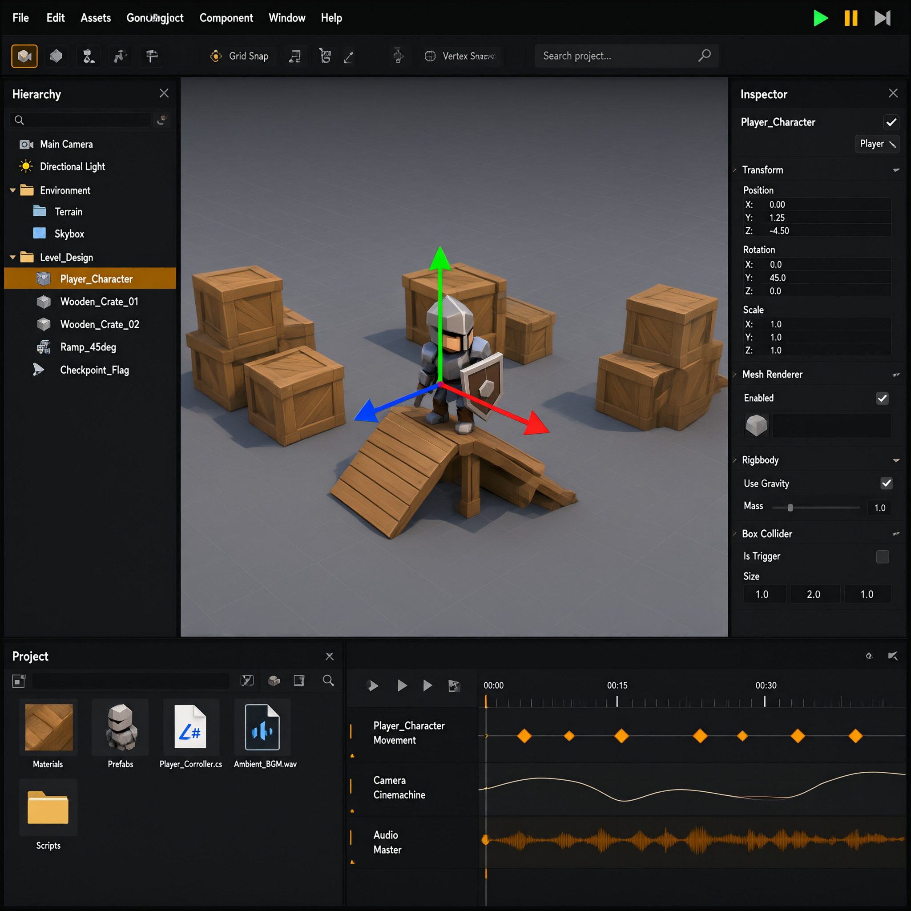
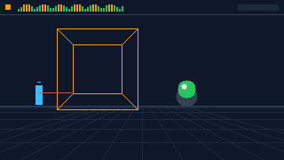

Screwdriver — движок, который закручивает игры
Открытый кроссплатформенный движок для 2D/3D-игр: ECS-ядро без GC-пауз, физика с фиксированным шагом, скрипты на Lua и JS, редактор Workbench и конвейер ассетов Crate. Одним словом — собери игру, как конструктор.
Screwdriver создан для разработчиков, которые хотят контролировать каждый байт: предсказуемая производительность, прозрачная архитектура и ничего лишнего в рантайме.
🧩Core: ECS
Entity-Component-System с плотными массивами, job graph и ареной памяти. Никаких сборщиков мусора в кадре.
🎨Renderer
Vulkan, OpenGL и WebGPU из одной кодовой базы. Кластеризованный свет, GPU-driven culling.
⚙️Bolt: физика
Твёрдые тела, CCD, raycast и триггеры. Фиксированный шаг 120 Гц независимо от FPS.
📜Torque: скрипты
Lua 5.4 и JS-биндинги с горячей перезагрузкой прямо во время игры.
🛠Workbench
Редактор с иерархией сцены, инспектором, таймлайном и профилировщиком.
📦Crate
Конвейер ассетов: импорт, сжатие текстур, сборка бандлов .scw.
Движок в работе
Ниже — живой рендер тестовой сцены прямо в вашем браузере. Это тот же кадр, который движок считает на железе: сетка, коллайдеры, raycast и HUD статистики.

Быстрый старт
Установите CLI screw и создайте первый проект одной командой:
screw new my_first_game --template 2d-platformer
[crate] создание проекта my_first_game …
[crate] шаблон: 2d-platformer (v2.4)
[crate] распаковка ассетов … 14 файлов
[ ok ] проект готов. Дальше:
cd my_first_game
screw runПодробнее — в разделе Установка и Первые шаги.
Видео-туториал
Короткий ролик о том, как выглядит рантайм-кадр движка (анимация, 36 кадров, 120 Гц физика):

Куда дальше
- Сцены и сущности (ECS) — как устроено ядро;
- Физика Bolt — тела, коллайдеры, отладка;
- Скриптинг Torque — Lua и JS;
- Пример: 2D-платформер — полный исходник;
- FAQ — частые вопросы и ответы.